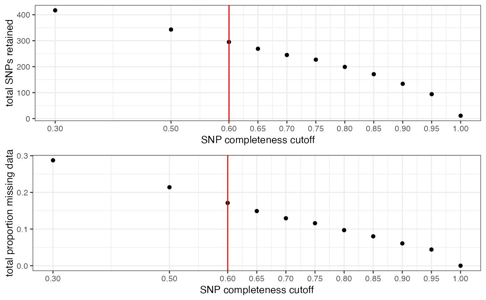
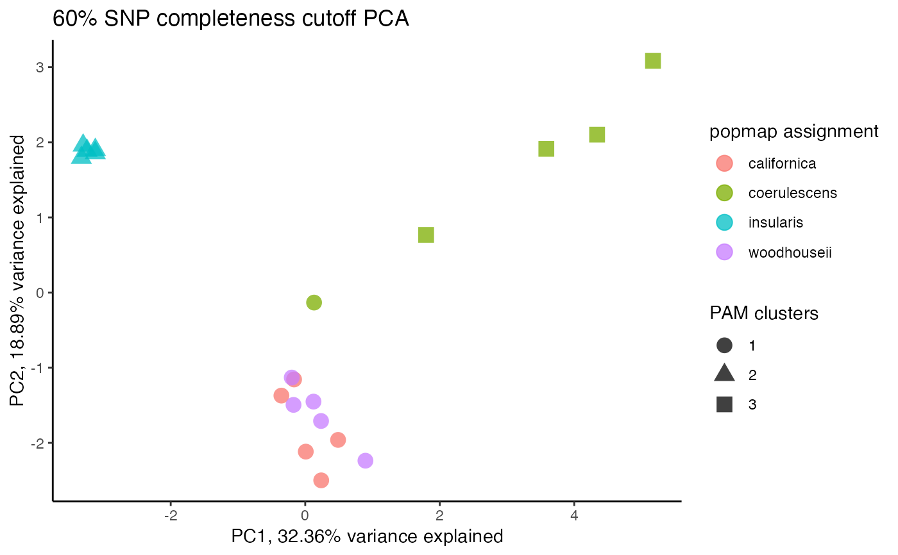
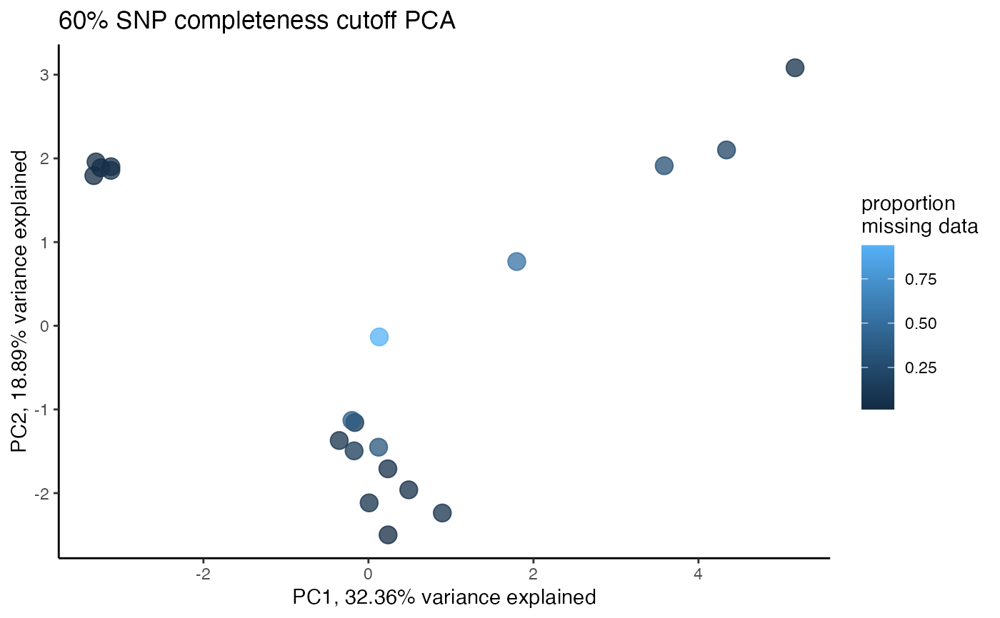
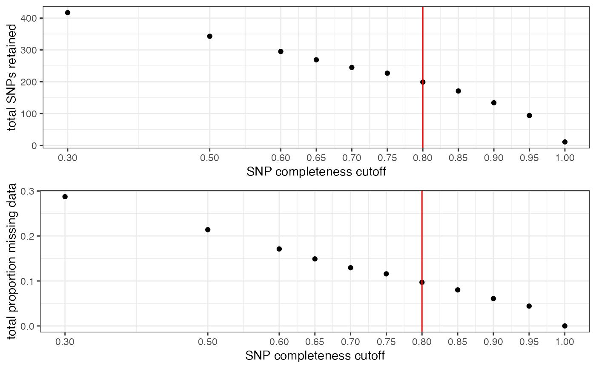
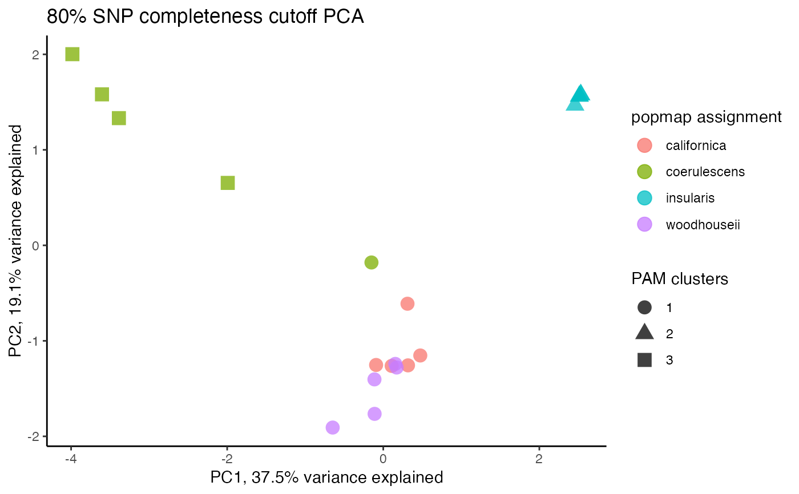
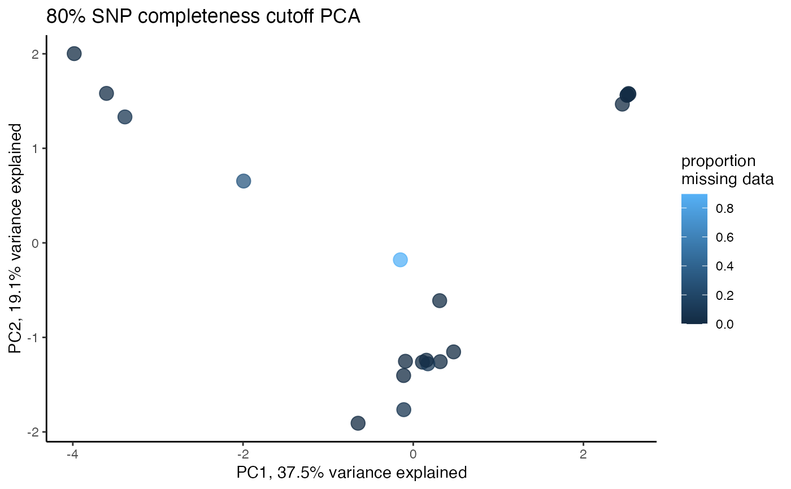

assess_missing_data_pca.RdThis function can be run in two ways: 1) Without 'thresholds' specified. This will run a PCA for the input vcf without filtering, and visualize the clustering of samples in two-dimensional space, coloring each sample according to a priori population assignment given in the popmap. 2) With 'thresholds' specified. This will filter your input vcf file to the specified missing data thresholds, and run a PCA for each filtering iteration. For each iteration, a 2D plot will be output showing clustering according to the specified popmap. This option is ideal for assessing the effects of missing data on clustering patterns.
assess_missing_data_pca( vcfR, popmap = NULL, thresholds = NULL, clustering = TRUE )
| vcfR | a vcfR object |
|---|---|
| popmap | set of population assignments that will be used to color code the plots |
| thresholds | optionally specify a vector of missing data filtering thresholds to explore |
| clustering | use partitioning around medoids (PAM) to do unsupervised clustering on the output? (default = TRUE, max clusters = # of levels in popmap + 2) |
a series of plots showing the clustering of all samples in two-dimensional space
assess_missing_data_pca(vcfR = SNPfiltR::vcfR.example, popmap = SNPfiltR::popmap, thresholds = c(.6,.8))#>#>#>#>#>#> [[1]] #> PC1 PC2 PC3 PC4 #> A_californica_333849 0.237741866 -2.4988404 -2.351813835 2.14328838 #> A_californica_333854 -0.354127529 -1.3710840 -1.932002575 -1.83979203 #> A_californica_333855 -0.165697881 -1.1561654 -1.102001045 -1.67398509 #> A_californica_333857 0.488514978 -1.9606079 -1.157016976 -0.42707071 #> A_californica_333860 0.008234824 -2.1165240 -1.575534572 0.04664692 #> A_insularis_334031 -3.244449855 1.8875981 -0.004242683 0.15963315 #> A_insularis_334032 -3.328762399 1.7937941 0.032348010 0.17309594 #> A_insularis_334033 -3.302240187 1.9576252 0.027737021 0.07963436 #> A_insularis_334034 -3.121877248 1.8566288 0.044493153 0.09811736 #> A_insularis_334037 -3.121081744 1.9003974 -0.018574175 0.21422938 #> A_woodhouseii_334133 0.235279341 -1.7091003 1.571126852 2.43373578 #> A_woodhouseii_334134 0.122858284 -1.4509186 0.924995203 1.17009468 #> A_woodhouseii_334142 0.895294022 -2.2372383 2.685445733 -0.85236090 #> A_woodhouseii_334148 -0.200318033 -1.1310393 1.045625915 -0.38294068 #> A_woodhouseii_334153 -0.174072324 -1.4946312 2.302686686 -1.28448335 #> A_coerulescens_396256 4.339770767 2.1009699 -0.254363947 0.44018754 #> A_coerulescens_396259 1.797642360 0.7673510 -0.112731430 -0.28643195 #> A_coerulescens_396262 0.131470546 -0.1333516 -0.092382544 -0.11303044 #> A_coerulescens_396263 3.584911161 1.9122802 0.155648579 0.01424265 #> A_coerulescens_396264 5.170909054 3.0828563 -0.189443370 -0.11281100 #> PC5 PC6 pop pam.clust #> A_californica_333849 2.30695729 -0.127695776 californica 1 #> A_californica_333854 -0.96923829 0.148874242 californica 1 #> A_californica_333855 -0.54138171 -1.075938210 californica 1 #> A_californica_333857 0.46242619 0.443840252 californica 1 #> A_californica_333860 -1.27313572 0.136969670 californica 1 #> A_insularis_334031 0.22816820 0.035932350 insularis 2 #> A_insularis_334032 0.18279836 -0.128408089 insularis 2 #> A_insularis_334033 0.19966895 -0.033480020 insularis 2 #> A_insularis_334034 0.19602878 -0.010296899 insularis 2 #> A_insularis_334037 0.03120804 0.109312888 insularis 2 #> A_woodhouseii_334133 -1.72666490 -0.721345948 woodhouseii 1 #> A_woodhouseii_334134 -1.25036561 0.286135215 woodhouseii 1 #> A_woodhouseii_334142 1.91461428 0.248727796 woodhouseii 1 #> A_woodhouseii_334148 0.19405629 -0.192039632 woodhouseii 1 #> A_woodhouseii_334153 0.05455793 -0.367094862 woodhouseii 1 #> A_coerulescens_396256 0.06592831 -0.101102779 coerulescens 3 #> A_coerulescens_396259 0.18985355 0.806218877 coerulescens 3 #> A_coerulescens_396262 -0.10652985 0.009830057 coerulescens 1 #> A_coerulescens_396263 -0.39300360 2.759466548 coerulescens 3 #> A_coerulescens_396264 0.23405352 -2.227905680 coerulescens 3 #> missing #> A_californica_333849 0.01355932 #> A_californica_333854 0.06779661 #> A_californica_333855 0.09152542 #> A_californica_333857 0.03728814 #> A_californica_333860 0.06779661 #> A_insularis_334031 0.04745763 #> A_insularis_334032 0.01355932 #> A_insularis_334033 0.03389831 #> A_insularis_334034 0.05762712 #> A_insularis_334037 0.04406780 #> A_woodhouseii_334133 0.04745763 #> A_woodhouseii_334134 0.32542373 #> A_woodhouseii_334142 0.06779661 #> A_woodhouseii_334148 0.38305085 #> A_woodhouseii_334153 0.12203390 #> A_coerulescens_396256 0.19661017 #> A_coerulescens_396259 0.53220339 #> A_coerulescens_396262 0.93898305 #> A_coerulescens_396263 0.28474576 #> A_coerulescens_396264 0.05084746 #> #> [[2]] #> PC1 PC2 PC3 PC4 #> A_californica_333849 0.10800467 -1.2622614 -0.42913167 -1.13151863 #> A_californica_333854 0.47446425 -1.1533207 -2.26034905 0.45898145 #> A_californica_333855 0.31057095 -0.6114347 -0.53888701 0.03297997 #> A_californica_333857 -0.09160947 -1.2527296 -1.03787951 0.49691720 #> A_californica_333860 0.31699182 -1.2567801 -1.66576508 -0.51892606 #> A_insularis_334031 2.51293154 1.5614888 0.21023053 -0.02197561 #> A_insularis_334032 2.53405901 1.5742992 0.21769383 -0.02632204 #> A_insularis_334033 2.52944312 1.5797358 0.21738596 -0.02494461 #> A_insularis_334034 2.51293154 1.5614888 0.21023053 -0.02197561 #> A_insularis_334037 2.45672207 1.4675647 0.19492725 -0.05306105 #> A_woodhouseii_334133 -0.11270777 -1.4035531 1.03565181 -2.05153710 #> A_woodhouseii_334134 -0.11083554 -1.7646661 1.02457015 -0.84479977 #> A_woodhouseii_334142 -0.64811300 -1.9080613 1.80936813 0.69078503 #> A_woodhouseii_334148 0.17183657 -1.2793948 0.51634289 0.97760683 #> A_woodhouseii_334153 0.15434163 -1.2415592 0.91025765 1.80226270 #> A_coerulescens_396256 -3.60420998 1.5810313 0.03232586 -0.19298249 #> A_coerulescens_396259 -1.99266201 0.6537738 -0.29845116 0.46722091 #> A_coerulescens_396262 -0.15117477 -0.1794463 -0.22073088 0.04413322 #> A_coerulescens_396263 -3.38747070 1.3321107 0.05360827 0.10676121 #> A_coerulescens_396264 -3.98351395 2.0017141 0.01860152 -0.18960558 #> PC5 PC6 pop pam.clust #> A_californica_333849 0.77809865 1.88515106 californica 1 #> A_californica_333854 -0.30240921 -0.65007850 californica 1 #> A_californica_333855 1.86150801 -1.07424934 californica 1 #> A_californica_333857 -0.25739454 0.33591027 californica 1 #> A_californica_333860 -0.26400332 0.04207691 californica 1 #> A_insularis_334031 -0.04572244 0.05381709 insularis 2 #> A_insularis_334032 -0.04493868 0.04805338 insularis 2 #> A_insularis_334033 -0.04685803 0.05007695 insularis 2 #> A_insularis_334034 -0.04572244 0.05381709 insularis 2 #> A_insularis_334037 -0.02363185 0.03106438 insularis 2 #> A_woodhouseii_334133 -0.11209490 -0.64744433 woodhouseii 1 #> A_woodhouseii_334134 -1.48562119 -0.65435725 woodhouseii 1 #> A_woodhouseii_334142 1.25368265 0.34508479 woodhouseii 1 #> A_woodhouseii_334148 -0.59943809 0.16093514 woodhouseii 1 #> A_woodhouseii_334153 -0.34449347 -0.19867999 woodhouseii 1 #> A_coerulescens_396256 0.01596914 -0.01426633 coerulescens 3 #> A_coerulescens_396259 -0.08067753 0.35280180 coerulescens 3 #> A_coerulescens_396262 0.04434716 -0.09654030 coerulescens 1 #> A_coerulescens_396263 -0.73964893 0.81626021 coerulescens 3 #> A_coerulescens_396264 0.43904901 -0.83943304 coerulescens 3 #> missing #> A_californica_333849 0.005847953 #> A_californica_333854 0.005847953 #> A_californica_333855 0.017543860 #> A_californica_333857 0.000000000 #> A_californica_333860 0.005847953 #> A_insularis_334031 0.005847953 #> A_insularis_334032 0.000000000 #> A_insularis_334033 0.005847953 #> A_insularis_334034 0.005847953 #> A_insularis_334037 0.000000000 #> A_woodhouseii_334133 0.000000000 #> A_woodhouseii_334134 0.076023392 #> A_woodhouseii_334142 0.000000000 #> A_woodhouseii_334148 0.116959064 #> A_woodhouseii_334153 0.011695906 #> A_coerulescens_396256 0.029239766 #> A_coerulescens_396259 0.327485380 #> A_coerulescens_396262 0.894736842 #> A_coerulescens_396263 0.087719298 #> A_coerulescens_396264 0.005847953 #>